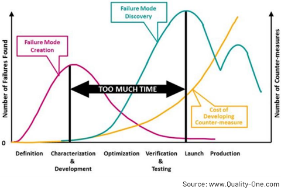
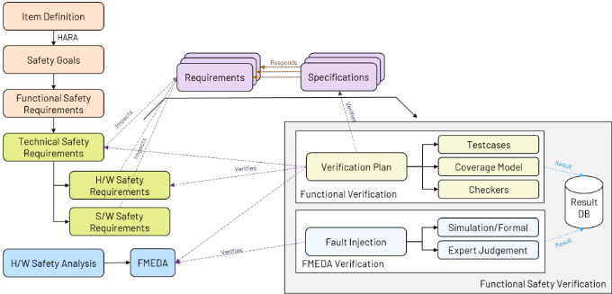
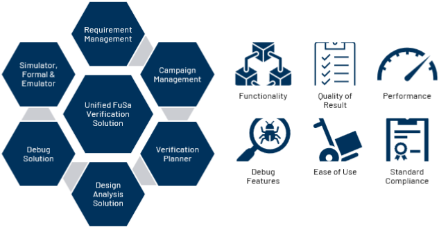
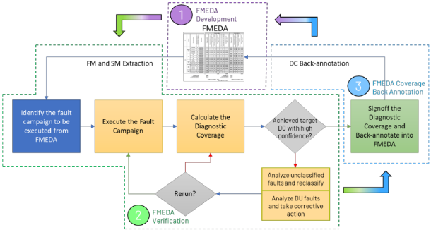
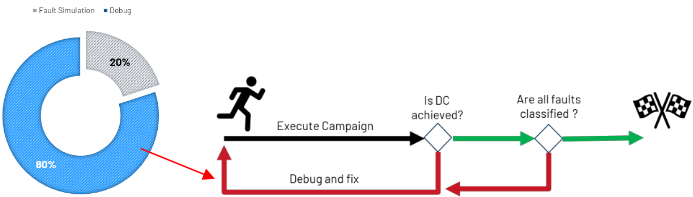
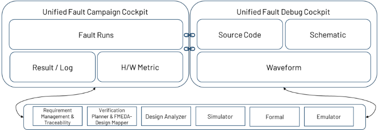
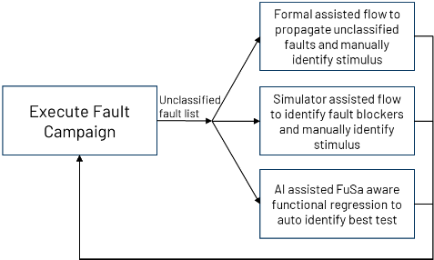
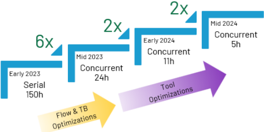
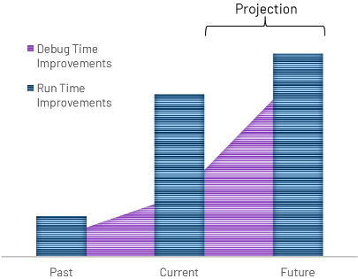

An Ideal FuSa Verification Solution!
一种理想的 FuSa 验证解决方案！
简介
论文面向汽车与工业 SoC/ASIC 的 ISO 26262 / IEC 61508 功能安全合规验证，指出传统 DV TFM 基本足以证明系统性失效合规，但随机硬件失效验证需要专用 EDA 方案。作者基于多个 ASIL-D / SIL3 SoC/ASIC 开发的实际经验，提出 feature rich 的 true-unified FuSa 验证方案愿景，聚焦 fault campaign 执行与 fault debug 两大耗时环节，并提出用 AI 辅助的 FuSa aware functional regression 解决 unclassified faults。关键结论：与 EDA 伙伴协作，将某 ASIL-D SoC 参考故障战役运行时间从 1 周降至 5h（先迁移到 concurrent fault simulator 并改造 testbench 降至 24h，再经 EDA 优化至 5h，覆盖 GL netlist 中 50k+ faults）。论文量化指出 debug 占 80% 时间、fault 仿真仅占 20%，目标是借助改进的 EDA 方案将 debug 时间缩短 50% 以上。需注意 AI 方案尚无 working prototype，统一方案细节留待 final paper 展开。
问题
汽车与工业 SoC/ASIC 需满足 ISO 26262 / IEC 61508 功能安全合规。传统 DV TFM 基本足以证明系统性失效要求，但随机硬件失效验证要求新的 EDA 方案：需通过 fault injection 验证 FMEDA 的诊断数字，而 FuSa SoC/ASIC 的 fault injection 规模与复杂度巨大；同时 fault campaign 的 debug（unexpected fault classification 归因、寻找能提升 fault coverage 的测试等）占 80% 时间，unclassified faults 现有方案（formal assisted propagation analysis、simulator assisted fault blocker analysis）均依赖人工、耗时耗资源。
方法
提出 ideal / feature rich 的 true-unified FuSa 验证方案：复用传统 DV TFM 覆盖系统性失效并叠加 tool confidence level 分析以确保 DV 工具不引入系统性失效；以 concurrent fault simulator 执行大规模 fault injection 验证 FMEDA（配合 testbench 的 stimulus management 改造）；从 SoC/ASIC 开发者视角给出统一方案的需求与期望清单（Figure 3/6），强调 fault campaign 执行与 fault debug 并重以提升 DV 工程师生产力、加速 FMEDA verification closure；针对 unclassified faults，提出 AI assisted FuSa aware functional regression 作为潜在实用答案。
关键结果
与 EDA 伙伴合作，将某 ASIL-D 应用 SoC 的 fault-campaign 运行时间从 1 周降到 5h
第一阶段：从 serial fault simulator 迁移到 concurrent fault simulator 并修改 testbench（主要是 stimulus management），运行时间降到 24h
第二阶段：由 EDA 伙伴基于经验对 fault simulator 优化，最终可在 5h 内完成 GL netlist 中超过 50k faults 的参考故障战役
debug 占 80% 时间、fault 仿真占 20%（Figure 5）；提出将 debug 时间缩短 50% 以上的目标（为愿景目标，非已验证结果）
创新点
不停留在单纯提升 fault simulator 的 raw-throughput，而是从 SoC/ASIC 开发者视角定义统一 FuSa 验证方案的需求清单，将 fault debug 与 unclassified fault 分析（主要时间消耗者）作为与仿真吞吐同等重要的核心问题；并提出用 AI 辅助 FuSa aware functional regression 自动解决 unclassified faults，替代现有 formal assisted propagation analysis 和 simulator assisted fault blocker analysis 等需人工投入的方案。
团队参考意义
相关度级别：high
命中能力域：2.5 功能安全与安全机制 | 2.6 Fault simulation/Z01X/TFMEA | 2.7 CyberSec/自动化
理由：论文直接命中团队三个能力域的核心技术：2.5（ISO 26262 / ASIL-D / FMEDA / safety verification / tool confidence level）、2.6（基于功能 stimulus 的 fault injection、fault grading、unclassified fault 分析与 FMEDA/TFMEA 论证关联）、2.7（AI 辅助验证流程自动化）。团队在 LPDDR/HBM4/UCie 等 IP 的 FuSa TFMEA/FMEDA 论证与 fault grading 中同样面临 fault campaign 运行时间与 debug 时间的瓶颈，论文的 serial→concurrent fault simulator 迁移经验、debug 占 80% 时间的量化结论以及 AI 辅助 unclassified fault 分析思路均可直接借鉴。
建议动作：深入精读并做内部分享
中文全文
| TITLE OF PAPER | An Ideal FuSa Verification Solution! |
|---|---|
| AUTHOR 1 | Name: Prashantkumar Ravindra Organization: Analog Devices Job Title: Staff Engineer, DV Email ID: Prashantkumar.ravindra@analog.com Mobile no:+91-8123868668 |
| TITLE OF PAPER | An Ideal FuSa Verification Solution! |
摘要 - 功能安全（Functional Safety，FuSa）是汽车和工业领域 SoC 与 ASIC 的一项极具挑战性且绝对必要的要求，这些芯片需要分别证明符合 ISO26262 和 IEC61508 标准。它为流片前设计验证（Design Verification，DV）领域增加了一个全新的维度，因此需要专门构建的工具、流程和方法（Tools, Flows and Methods，TFM）来实现这一目标。传统的 DV TFM 已几乎足以证明符合系统性失效（systematic failure）要求，但随机硬件失效（random hardware failure）要求则需要更新的 EDA 解决方案。通过从多个 ASIL-D / SIL3 SoC 和 ASIC 开发的实际用例中汲取经验，本文提出了一种理想的 FuSa 验证解决方案，该方案利用了创新的 FuSa 感知调试（FuSa aware debug）以及 AI/ML 技术。
I. Introduction
功能安全（FuSa）定义为不存在由电气/电子系统故障引起的危害而导致的不合理风险。换言之，FuSa 关注的是确保系统即使在出现异常时也能安全运行。如图 1 所示，尽早发现潜在的 FuSa 脆弱性对产品成功至关重要。

通常，失效分为两类：系统性失效（systematic failure）和随机硬件失效（random hardware failure）。在 ISO 26262 中，系统性失效定义为以确定性方式与某一特定原因相关联的失效，只能通过更改设计或制造工艺、操作规程、文档或其他相关因素来消除。类似地，随机硬件失效定义为在硬件要素的生命周期内可能不可预测地发生、且服从某种概率分布的失效。
1
Functional and Functional Safety Verification
功能安全（FuSa）验证是功能验证的超集，因为它要求执行一些超出功能验证范围的操作。图 2 对这些要求给出了更详细的说明。

在覆盖真实场景和错误场景的功能验证之外，FuSa 验证中还引入了故障注入（FI），用于验证 FMEDA 的诊断数值。传统功能验证甚至涵盖了系统性失效的验证，而 FI 则覆盖随机硬件失效的验证。
因此，传统功能验证的 TFM 可以复用于 FuSa 验证，并辅以额外的工具置信度等级分析，以确保设计验证（DV）工具不会引入任何系统性故障。
尽管 FI 的概念在业界已存在一段时间，但对于 FuSa 片上系统（SoC）和专用集成电路（ASIC）而言，其规模和复杂度都相当可观。因此，需要专门构建的解决方案。
II. Requirements
为了缩短上市创收时间（TTR）并加快 FuSa 认证进程，需要确定业界最佳的 FuSa 验证解决方案。在本节中，让我们探讨执行 FuSa 验证所需的各项要求。功能验证是 FuSa 验证的一个子集，其 TFM 要求已为设计验证（DV）社区所熟知，因此此处不再讨论。图 3 列出了统一的 FuSa 验证解决方案的各项要求及预期。这些内容将在最终论文中详细讨论。
本文的意图并非要抬高某一家电子设计自动化（EDA）厂商而贬低其他厂商，而是认可业界已有的最佳方案，并从 SoC/ASIC 创建者的视角提出升级建议。
2


让我们进一步聚焦 FuSa 验证中的一个特定方面，该方面是 EDA 创新的活跃领域：结合故障注入（FI）的 FMEDA 验证。
FMEDA verification with Fault Injection
在安全工程师眼中，FMEDA 是一种分析技术；然而从设计验证（DV）工程师的角度来看，就其文档形式而言，它类似于一份验证计划。它定义了验证范围和签核标准。

虽然看起来大量 DV 时间都花在了故障仿真活动上，但那已经是过去的事了！就目前而言，得益于 EDA 工程师们的出色工作，并发故障仿真器已经解决了运行时间的限制，这将在结果部分进一步讨论。如图 5 所示，调试故障活动以查明意外故障分类的原因、识别能够提升故障覆盖率的测试等工作占用了 80% 的时间，而故障仿真仅占 20%。
3

III. Proposed (Ideal) Solutions
除了故障仿真器的原始吞吐量之外，当前还迫切需要一个功能丰富、真正统一的功能安全（FuSa）验证解决方案。基于参与多个 FuSa SoC/ASIC 设计工作所获得的经验，图 6 描绘了作者对真正统一的 FuSa 验证的愿景，其聚焦于故障活动执行与故障调试，以提升 DV 工程师的生产效率，并更快地实现 FMEDA 验证收敛。关于该图中各个要素及其相互之间交互的更多内容，将在最终论文中讨论。

此外，为了解决尚未解决的未分类故障问题，需要寻找超越现有解决方案的方法，例如形式验证辅助的传播分析和仿真器辅助的故障阻断分析方案，因为这两种方案都需要人工参与，既耗费时间又耗费资源。

4
AI 辅助的 FuSa 感知功能回归，可能成为解决未分类故障问题的一种切实可行的答案。最终论文将包含有关该方案实现的更多底层细节，但不会提供已就绪的可运行原型。
III. Results
与 EDA 合作伙伴的紧密合作，使一款面向 ASIL-D 应用的 SoC 的故障活动运行时间从 1 周显著缩短至 5 小时。如图 8 所示，在本工作的第一阶段，我们从串行故障仿真器迁移到并发故障仿真器，并对测试平台（testbench）进行了必要的修改（主要针对激励管理），从而将运行时间降至 24 小时。在本工作的第二阶段，EDA 合作伙伴基于本次工作及其他工作的经验，对故障仿真器进行了优化。目前，我们已能够在 5 小时内完成针对 GL 网表中一个包含超过 50k 个故障的失效模式的参考故障活动。

为了最大限度地减少在故障调试上花费的大量时间，需要显著改进调试解决方案。随着 EDA 解决方案中已提出的改进（已在上一节中介绍），预计调试时间的改善将大幅提速，如图 9 中紫色部分所示。

5
IV. Summary
通过多个 ASIL-D / SIL3 SoC 和 ASIC 开发中的真实用例所获得的经验教训，本文提出了一种理想的 FuSa 验证解决方案。本文主张复用传统的 TFM（测试功能模式）来解决系统性故障，同时强调需要针对随机硬件故障分析构建专用解决方案。故障调试和未分类故障分析挑战（主要的时间消耗点）可以通过本文所述的通用解决方案来应对。AI 已经到来，但尚未渗透到这一领域，本文提议使用 AI 来解决 FuSa 验证中众多问题之一。其目标是将调试时间缩短 50% 以上，以跟上 FuSa 验证日益增长的复杂性和规模，从而支持产品快速开发，让世界比以往任何时候都更安全。
6